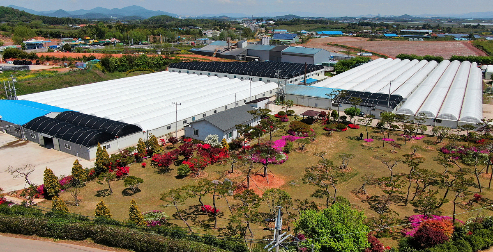
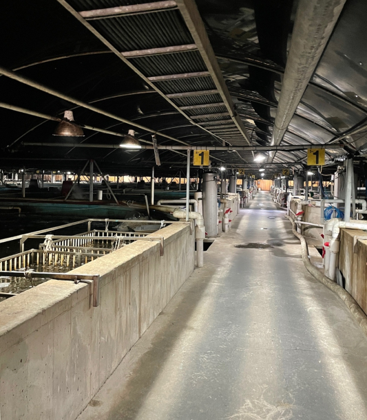
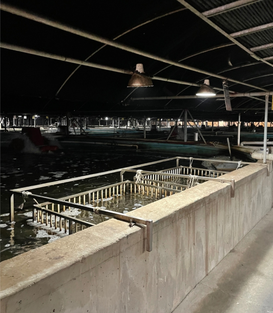
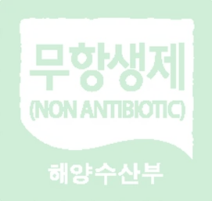
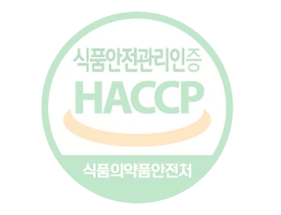
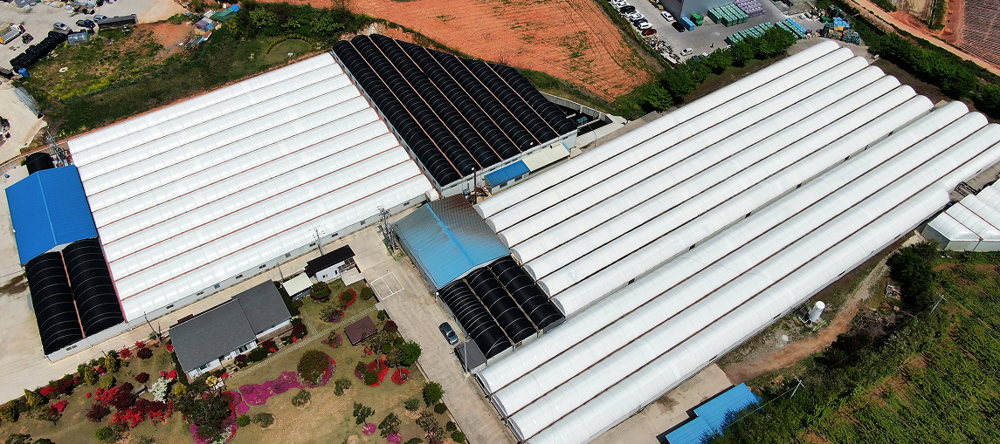
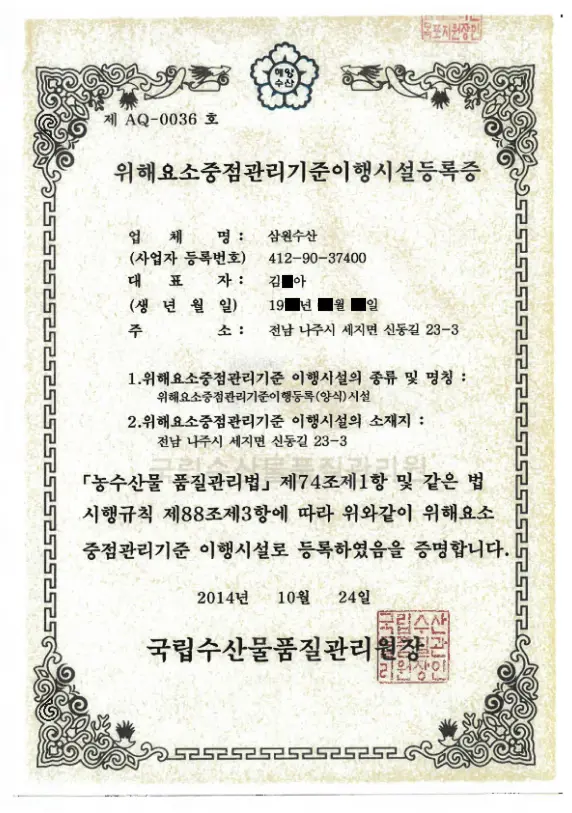
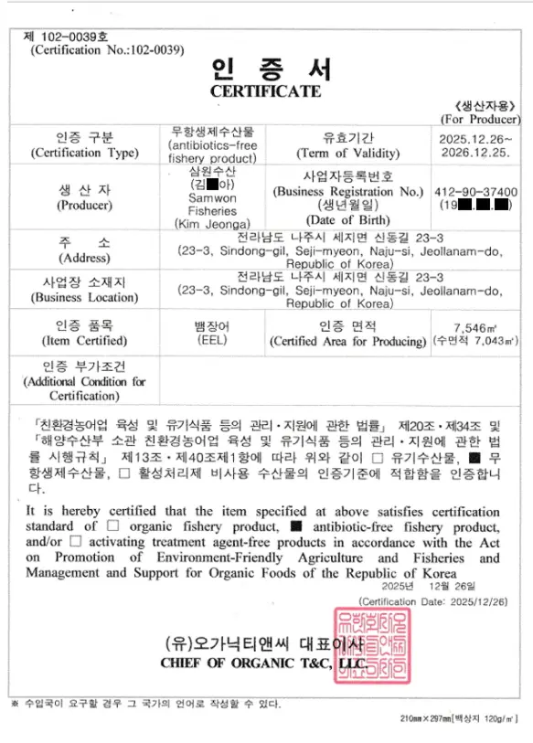
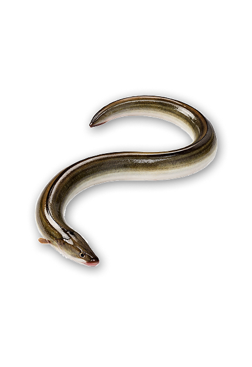
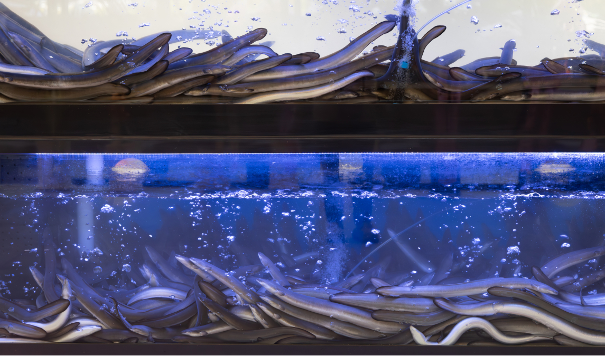

THE STORY OF PUMJANG
좋은 장어는 좋은 물에서 시작됩니다
품장 양식장의 이야기
특수한 친환경 방식으로 관리되는 장어 양식장 소개 페이지입니다.
검증된 양식 환경에서 더욱 건강하게 자란 국내산 장어만을 사용합니다.
POINT 01
검증된 장어 양식장
좋은 장어는 좋은 물에서 시작됩니다.
저희는 이 원칙하에 가장 중요한 원칙을 지키기 위해
지난 15년 동안 함께 물길을 열어온 경험이 있습니다.
"장어가 자라 건강하게 자랄 수 있는 환경은 물이 만들고,
그 길은 결국 자연에 가장 가까운 환경의
힘이 보인다는 결론에 도달했습니다."
그래서 저희는 먹이가 좋아도 물부터 다르게 선택했습니다.
저희 양식장은 지하 350미터 깊은 곳에서
끌어올린 천연 암반수를 사용합니다.
오염 요소가 닿지 않도록 지나치게 과도한 여과나 불필요한 약품도 쓰지 않고,
장어의 상태를 가장 먼저 생각하고,
항상 실제로 오래 갈 수 있는 수질을 유지합니다.


POINT 02
100% 국내산, 무항생제 & HACCP


저희는 무항생제 양식을 최우선으로 지켜 왔습니다.
마지막까지 건강하게 관리된 장어를 위해 사육부터 관리까지의 모든 과정을
보다 엄격한 기준과 원칙으로 관리합니다.
깨끗한 물과 안정적인 사육 환경을 통해 장어 본연의 힘을 지키고,
장어가 더 건강하게 자랄 수 있도록 체계적으로 관리하고 있습니다.
식품 안전과 위생 관리를 위한 인증 기준을 충족하며,
생산 이력과 관리 과정까지 꼼꼼하게 확인하고 있습니다.



POINT 03
국내산 자포니카종 민물장어
저희 양식장에서는 국내산 자포니카종 민물장어만을 정성껏 키우고 있습니다.
자포니카 장어는 육질이 단단하고 지방의 균형이 좋아
깊은 풍미를 느낄 수 있는 장어로 잘 알려져 있습니다.


그래서 좋은 장어를 좋아하는 많은 사람들이 자연으로 만들어지듯 찾습니다.
장어의 성장 단계에 맞는 먹이 관리, 안정적인 수온 유지, 충분한 산소 공급 등
다양한 요소들이 균형을 이루어야 합니다.
이러한 세심한 관리와 환경이 더해질 때 비로소 좋은 품질이 완성됩니다.
저희가 추구하는 목표는 단순히 장어를 판매하는 것이 아니라,
소비자가 믿고 선택할 수 있는 건강한 먹거리를 제공하는 것입니다.
자연이 만든 깨끗한 물과 좋은 먹이,
그리고 정직한 마음으로 키운 장어의 진한 맛과 건강함을
여러분의 식탁에서 느껴보시길 바랍니다.